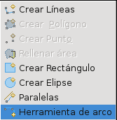
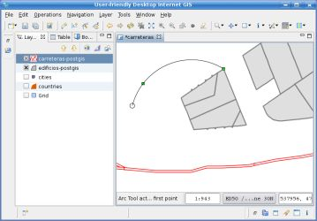

Crea un linestring que se asemeja a un arco dados tres puntos de control (punto inicial, eje y punto final).
Crea un linestring que se asemeja a un arco dados tres puntos de control (punto inicial, eje y punto final). Crea un linestring que se asemeja a un arco dados tres puntos de control (punto inicial, eje y punto final).
La Herramienta Arco permite crear un Feature cuya geometría es una aproximación lineal de la circunferencia de un arco, especificando tres puntos que definen dos cuerdas de arco consecutivas.
La Herramienta Arco es una herramienta de creación de Features y funciona sobre la capa seleccionada actualmente, así pues la capa seleccionada debe permitir crear geometrías de tipo LineString, tanto si el tipo de feature los especifica como LineString o MultiLineString.
Cuando la Herramienta Arco procede a crear el nuevo Feature, no guarda los cambios, permitiendo al usuario deshacer la operación, establecer los valores de los atributos del Feature o guardar los cambios como normalmente se hace en uDig.
Con el fin de preservar la consistencia visual, y por lo tanto ser consistente con las acciones que lleva a cabo el usuario, la geometría creada por la Herramienta Arco será primeramente creada en el CRS del mapa, y después proyectada al CRS de fondo para ser almacenada. Esto permite al usuario crear el arco en el CRS deseado estableciendo el CRS del mapa como uno afín a sus propositos. Un efecto secundario será, que si los datos y el CRS del mapa difieren, la geometría será un arco de circunferencia en el CRS del mapa pero probablemente no lo sea en el CRS de los datos.
Como se muestra en la Figura 1, para comenzar a usar la Herramienta Arco primero debes seleccionarlo desde el menú desplegable en la barra de herramientas de edición de uDig.

Figura 1. Seleccionar Herramienta Arco
Una vez que la herramienta es seleccionada, necesita especificar tres puntos que definan el arco. Para cualquiera de los tres puntos puede usar el area de snap, si es activado, con el fin de seleccionar automáticamente el vértice más cercano de otro Feature.
La Figura 2 muestra el resultante cuando se han especificado tan solo dos puntos. Podrá ver el arco resultante en cualquier momento hasta que el tercer punto sea especificado.

Figura 2. Especificar puntos de control
Con un solo click, especifique el tercer punto y el Feature con una geometría de arco se creará como se muestra en la Figura 3. La geometría resultante será un LineString aproximado del verdadero arco.

Figura 3. Arco creado tras especificar el tercer punto